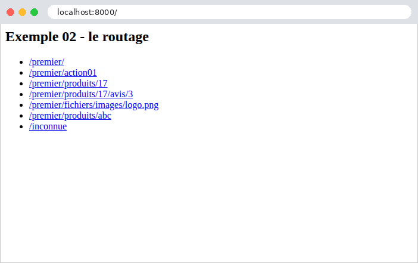
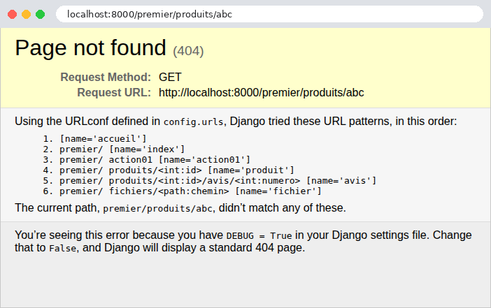
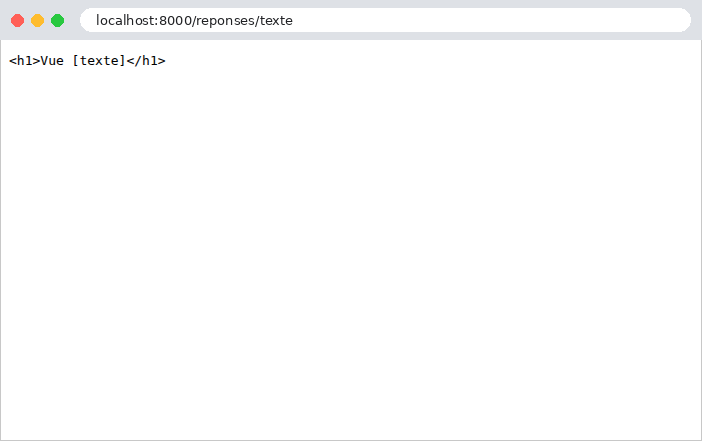
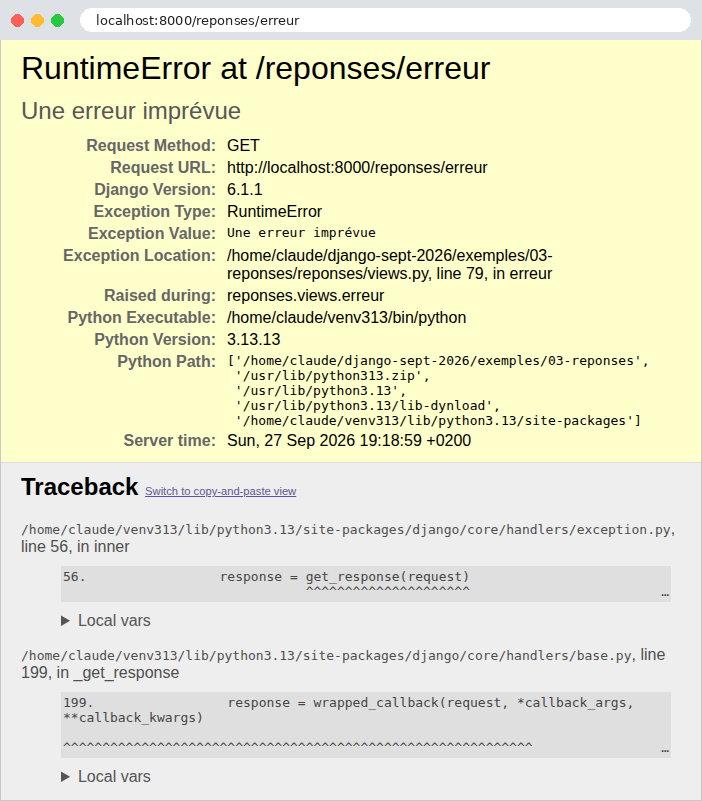
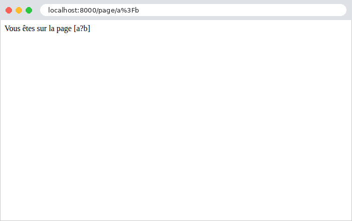

2. Views, Routing, Responses
This chapter examines the path a request takes, from the browser to the view that processes it, and the response that view returns. Templates will not be introduced until Chapter 3: here, views return text or JSON directly.
2.1. Example 01: The Structure of a Django Application
The first example is the smallest possible [Django] application. A project created by [django-admin startproject] contains six files, and an application created by [python manage.py startapp] contains seven more (see introduction); here, we keep only those that the application cannot do without:
- [manage.py]: the project’s command-line tool. This is used to start the development server and execute many other commands;
- [config]: a [Python] package, which is a folder containing [Python] modules ([.py] files) and a [__init__.py] file. To import a module from a package, type [config.settings] (the [config/settings.py] file);
- [config/settings.py]: the application settings;
- [config/urls.py]: the application’s routes and, in this first example, its only view;
- [config/wsgi.py]: the application’s entry point for a web server;
- [config/__init__.py]: the file that makes the [config] folder a package. It is often empty; ours contains only a comment.
2.1.1. The entry point: config/wsgi.py
[Python] has a standard for web applications: WSGI (Web Server Gateway Interface, pronounced “whiskey”). It defines how a web server forwards a request to a [Python] application and how it receives the response. All [Python] web servers ([gunicorn], [waitress], [uWSGI], the [Django] development server...) know how to call an application named WSGI, and all [Python] web frameworks ([Django], [Flask]...) generate one. The file [config/wsgi.py] generates the one for our project:
- Line 1: a comment, from [#] to the end of the line. All example files begin with a comment that states their name and purpose;
- line 3: the statement [import] imports a module: in this case, [os], a module from the standard library of [Python], which provides access to the operating system, and in particular to the process’s environment variables ([os.environ]);
- Line 5: [from ... import ...] imports a module name: the function [get_wsgi_application] from the module [django.core.wsgi]. A module’s full name indicates its location: [django.core.wsgi] is the file [wsgi.py] in the folder [core] of the package [django], installed in the virtual environment (see introduction). After this import, the file can simply be named [get_wsgi_application];
- line 8: [Django] retrieves its settings via the environment variable [DJANGO_SETTINGS_MODULE], which contains the name of the configuration module: [config.settings]. [os.environ] behaves like a dictionary; its method [setdefault] assigns it a value, unless it already has one: a true environment variable, set before the server is started, takes precedence;
- Line 11: [get_wsgi_application()] prepares [Django]: it reads the settings, sets up logging, loads the project’s applications (example 02), and then returns the application WSGI, stored in the variable [application]. It is this variable that the web server looks for in the file. In [Python], a variable is not declared: it is created upon its first assignment and can hold values of any type.
The WSGI application is an object that the server calls—for each request it receives—with the request details; the object returns the response. The entire application is therefore a function that transforms a request into a response. In between, [Django] creates a request object ([HttpRequest]), finds the view responsible for handling the request (routing), calls it, and retrieves the response object ([HttpResponse]) that it produces, which it then transmits to the server.
This file is executed only once, when the server starts up. This is the key difference from [PHP], which readers of the [Symfony] course have seen in action: in [PHP], the application is rebuilt for each request and then discarded; in [Python], it is built once, at startup, and then remains in memory to handle all subsequent requests. The configuration, the routing table, the imported modules, and the objects stored in module variables—all of this is built once and shared by all requests. This is fast, but it requires caution: data modified by one request is visible to subsequent requests, and if the server processes multiple requests at once (the development server does this, using one thread per request), two requests may modify the same data simultaneously. We’ll come back to this in Example 06, and especially in the chapter on data scopes.
[Python] has a second, more recent standard: ASGI (Asynchronous Server Gateway Interface), for asynchronous applications (such as WebSockets, for example). [Django] can generate both; the [asgi.py] file created by [django-admin startproject] generates the ASGI application. We’ll stick with WSGI.
2.1.2. The configuration: config/settings.py
The settings for [Django] are variables from the [config.settings] module, written in uppercase. It is a standard [Python] file: you can calculate values, read environment variables, and import other modules within it. [Django] requires only a few settings; all others have a default value, defined in the [django.conf.global_settings] module of [Django] (more than 150 settings). The [python manage.py diffsettings] command displays the settings that differ from their default values:
- line 3: [pathlib] is the standard library module that handles file paths. A [Path] object represents a path; it is written the same way in [Windows] and elsewhere;
- line 6: the project folder. [__file__] is the path to the current file ([config/settings.py]); [resolve()] makes it absolute; [.parent] refers to the folder containing it ([config]), and [.parent.parent] refers to the folder above it: the [01-structure] folder. This setting, [BASE_DIR], is not a setting of [Django]: it is a convenience feature that other settings will use to refer to project folders ([BASE_DIR / "templates"], Example 13: the operator [/] combines two path segments);
- Line 10: debug mode. If it is set to [True], an unhandled exception displays a detailed error page (Example 03), and the development server serves the static files itself (Example 15). This mode is intended for development, and development only: the error page reveals the application’s source code and configuration;
- Line 13: the application’s secret key: a random string that [Django] uses to sign certain data (signed cookies, anti-CSRF tokens, password reset links, etc.). This setting is required: without it, [Django] will refuse to start. Each example has its own. The prefix [django-insecure-] is the one used by [django-admin startproject]: it serves as a reminder that this key, hardcoded in the source code, must not be used in production, where the key is provided via an environment variable (case study);
- Line 17: the hostnames that the application is configured to serve (the [Host] header in the request). This is a safeguard against requests that falsely identify the target site. In debug mode, an empty list is equivalent to [localhost], [127.0.0.1], and [::1]; outside of debug mode, it must be populated—otherwise, [python manage.py runserver] will refuse to start. In [Python], [[a, b]] is a list;
- Lines 20–21: the application’s language ([fr]: dates, numbers, and messages in [Django] are in French; see Example 06) and its time zone. Strings can be enclosed in either double quotes or single quotes; the examples use double quotes;
- line 24: the module containing the application’s routes: [config.urls], i.e., the file [config/urls.py];
- line 27: the WSGI application, specified by its full path: the [application] variable from the [config.wsgi] module. This is the one launched by the development server.
2.1.3. Routes and view: config/urls.py
- lines 3–4: import of the [HttpResponse] class, the HTTP response, and the [path] function, which declares a route;
- lines 9–11: a view—a function that receives the request and returns the response. [def] defines a function; its body is the indented block following the colon. In [Python], indentation is not merely a matter of formatting: it is what delimits the blocks (whereas [PHP] and [Java] use curly braces). The parameter [request] receives the request, a [HttpRequest] object that [Django] always passes first to a view (example 05); it is a convention of [Django] to name it [request];
- Line 11: The view returns a [HttpResponse] object, whose first parameter is the body of the response. In [Python], an object is created by calling its class as a function, without the [new] keyword. This is the rule for [Django]: a view always returns a [HttpResponse] object (example 03);
- lines 15–17: the routing table. [Django] searches the [ROOT_URLCONF] module for a variable named [urlpatterns]: a list of routes. The route [path("", accueil)] associates the empty path (the site root, [/]) with the view [accueil]. Note that a route’s path is written without the leading slash: [Django] removes it from the requested path before comparing it to the routes. Note also that the function itself ([accueil], without parentheses) is passed to [path], not its result: In [Python], a function is an object like any other, which can be stored in a variable or passed to another function. [Django] will call it later, for each request [/]. A comma after the last element in the list is allowed and is common practice when the elements are written one per line.
In a real project, views are never written in the routes file: they go into the application’s [views.py] files (Example 02). We’ve done it this way here to keep the example simple.
2.1.4. The manage.py tool
The [manage.py] file is a [Python] script that prepares [Django], just like [config/wsgi.py], but to execute a command rather than process requests:
- Line 1: In [Linux] and [macOS], this line allows the file to be executed directly ([./manage.py]); under [Windows], you always enter [python manage.py];
- line 10: the configuration module, as in [config/wsgi.py];
- Lines 12–13: An import can also be performed within a function. [execute_from_command_line] executes the requested command: [sys.argv] is the list of command-line parameters ([["manage.py", "runserver"]]);
- lines 16–17: [__name__] is equal to ["__main__"] when the file is executed directly ([python manage.py]), and the name of the module when it is imported. This condition, found in many [Python] scripts, calls the [main] function only in the first case.
[python manage.py help] displays the list of available commands: twenty-five in this example, and more when [Django] features are added (static files, sessions, authentication, etc.). We will use several of them: [runserver], [check] (project verification), [shell] (a [Python] console where [Django] is ready), [makemessages] and [compilemessages] (translations, example 22), [collectstatic] (static files, case study; the [django.contrib.staticfiles] application adds this). [django-admin] (see appendices) is the same tool, but it does not know where the project configuration is located.
2.1.5. Execution
In a terminal window open to the [01-structure] folder, where the virtual environment for the examples has been activated (see introduction), type [python manage.py runserver]. [Django] displays:
The command [runserver] launches the development server integrated into [Django]. It first performs system checks on the project: missing or inconsistent settings, or incorrectly written routes, will result in errors or warnings here, before any requests are made. It then listens on port 8000 on the machine itself ([127.0.0.1], [localhost]): it accepts only requests from this machine, which is appropriate for development ([python manage.py runserver 0.0.0.0:8000] would open it to other machines on the network). It is stopped using [Ctrl-C]. This server is intended for development, as its warning states: in production, it will be a WSGI server, such as [gunicorn] or [waitress] (see case study).
The first line indicates that the server monitors the project files ([StatReloader]: it regularly compares their modification dates). Since the application remains in memory, a change to a file such as [Python] would not be detected by the running application; therefore, the development server restarts automatically as soon as a file changes. It is not necessary to restart it manually, except after adding a new file that has not yet been imported by anyone.
Let’s access URL and [http://localhost:8000/] using a browser:

then with [curl]. The [-i] option also displays the HTTP headers from the response:
The first line of the response is the protocol version, the status code (200), and its label ([OK]). Next come the headers: the date, the server (the WSGI server from the [Python] standard library, on which the development server is built), the content type, and [Connection: close] (the development server closes the connection after each response). A blank line separates the headers from the body of the response. In the rest of this document, we will no longer include the headers [Date], [Server], and [Connection], as they do not vary.
The header [Content-Type: text/html; charset=utf-8] indicates that the response is HTML, whose characters are encoded in UTF-8. This is the choice of [Django] for a response whose view did not specify the type: the browser therefore interprets the string as HTML (here, without a tag, it is displayed as-is). Example 03 will show how to specify a different type. The response is minimal: no [Content-Length] header, no cookies, and no security headers. These are added by the middleware in [Django] (Example 03), and our application has none.
For each request, the server console displays a log entry: the date, the request details (method, path, protocol), the response code, and the size of the response body in bytes:
Let’s modify the text on line 11 of [config/urls.py] and save the file: the console displays [.../01-structure/config/urls.py changed, reloading.], followed by the startup lines. The next request receives the new text.
2.2. Example 02: Routing
Routing associates a URL with a view. Writing all the views directly into the routing file would quickly become unreadable; instead, they are organized into applications. A [Django] application is a [Python] package that groups together everything related to a single domain: its views, its routes, and, later, its templates, forms, and models. A project is a collection of applications. Example 02 has two:
The files [manage.py], [config/__init__.py], and [config/wsgi.py] are those from Example 01: we will not mention them again. The file [config/settings.py] always begins with the same settings (only the example name and the secret key change); we will comment only on the settings added by each example. Here is the list of applications:
- lines 17–20: The [INSTALLED_APPS] setting lists the project’s applications, identified by their package names. [Django] loads them at startup, in this order. For our example, the declaration is not essential: the views for [accueil] and [premier] are found via imports from the route files. It will become essential as soon as the applications include templates (Example 13), template tags (Example 16), translations (Example 22), or models from ORM (Example 28)—which [Django] searches for only in declared applications. [Django] itself provides several applications ([django.contrib.sessions], [django.contrib.messages], [django.contrib.staticfiles], [django.contrib.admin]...), which are declared in the same way.
2.2.1. The view for the home application
- line 4: import of a decorator from [Django];
- lines 9–10: a decorator is a function that wraps another function to modify its behavior. It is written as [@nom] above the function definition: [@require_GET] above [def index] is equivalent to writing [index = require_GET(index)] after the definition. The function [index] is replaced by a function that first checks the HTTP method of the request: if it is not GET, it responds with a 405 error itself, without calling [index]. Without a decorator, a view accepts all methods. The [django.views.decorators.http] module also contains [require_POST], [require_safe] (GET and HEAD), and [require_http_methods(["GET", "POST"])]. Note that [require_GET] rejects requests up to and including the method HEAD (the same request as GET, without the response body): [require_safe] is required to accept it. By convention, a function or variable name like [Python] is written in lowercase, with words separated by underscores ([require_GET] is an exception), while a class name has an uppercase letter at the beginning of each word ([HttpResponse]);
- lines 11–22: a multi-line string, delimited by three quotation marks (["""]). The view returns HTML, sent with the type [text/html] (see Example 01).
The view [index] thus returns a page HTML that contains links to views in the other application:

2.2.2. The views of the first application
- lines 9–11: a view as a function, as in Example 01;
- lines 16–21: A view can also be a class that inherits from the [View] class of [Django]. In [Python], inheritance is written by placing the parent class in parentheses after the class name. The class has one method for each HTTP method it implements, named after the HTTP method in lowercase: [get] for GET, [post] for POST. [Django] calls the method that corresponds to the request; a HTTP method that is not handled by any method in the class results in a 405 error. A [Python] method always receives, as its first parameter, the object on which it is called—conventionally named [self]—followed by the request. This is the clearest way to handle multiple HTTP methods on the same URL (a function should test [request.method] itself; see Example 11). [Django] also offers generic views—ready-made classes for common needs ([TemplateView], [ListView], [FormView]...), which this document does not use: they hide precisely what we want to show;
- lines 26–28: a view that receives a route parameter, [id], after the request. The value is already converted to an integer (see below). The string [f"Produit n° {id}"] is an f-string: expressions written within curly braces are replaced by their values;
- lines 32–34: two route parameters. [Django] passes them to the view by name (named parameters): the order of the view’s parameters does not matter. Here, [numero] is written before [id];
- lines 38–40: a route parameter that contains slashes.
2.2.3. The routes: config/urls.py and premier/urls.py
The URL entries still need to be associated with the views. The main routing table, for the [ROOT_URLCONF] setting:
- Line 5: Import the [views] module from the [accueil] application under a different name: [as accueil_views]. Two applications may each have a module named [views]; renaming it prevents confusion;
- Line 9: The path to the site root. The third parameter, [name], specifies the path: this name will be used to generate its URL (Example 04) without hard-coding it. [Python] accepts parameters by position or by name ([name="accueil"]): named parameters make the call more readable;
- Line 12: [include] delegates a portion of the URL entries to another routing table: all URL entries that begin with [premier/] are assigned to the routes in the [premier.urls] module, to which [Django] passes only the end of the path. Each application thus keeps its routes in its own [urls.py] file, and the project only decides which prefix to mount them under. The prefix ends with a forward slash: this is the convention used by [Django], where application routes never begin with a forward slash.
- Line 10: [app_name] provides a namespace for the file’s routes: for the rest of the project, the route named [produit] is called [premier:produit]. Two applications can thus each have a route named [index] without conflict;
- line 14: the path [""] refers to the prefix itself: URL and [/premier/];
- line 17: the view written as a class. [as_view()] is a method of the [View] class that creates the function that [Django] will call for each request: this function creates a [Action01] object, then calls its [get] or [post] method, depending on the HTTP method of the request. A new object is created for each request;
- Line 20: [<int:id>] is a route parameter: this segment of URL can take on several values. [id] is the name of the parameter, which will be passed to the view; [int] is a converter that accepts only digits and passes an integer to the view: for URL and [/premier/produits/17], the [id] parameter of the view is the integer 17. If the segment does not consist of digits, the route does not match. This is data binding, which the next chapter will examine in detail;
- line 22: two route parameters;
- line 25: the converter [path] accepts any path ending, including slashes. [Django] has five converters: [str] (the default converter: [<nom>] is equivalent to [<str:nom>]; any non-empty text without a slash), [int] (numbers), [slug] (letters, numbers, dashes, and underscores, as in [mon-article-01]), [uuid] (an identifier UUID), and [path]. Example 12 will show how to write a “custom” converter, and Example 22 will show the function [re_path], which describes a route using a regular expression.
For each query, [Django] iterates through the routes in order and stops at the first one that matches the requested path: the order of the routes matters when two routes can match the same path.
2.2.4. Execution
Here are the responses to a few queries:
To send a POST request, use the [-X POST] option of [curl]:
The request POST is accepted as is. This will no longer be the case once the application has the [Django] anti-CSRF protection middleware (Example 18), which rejects any POST request that does not prove it originated from a form within the application. A HTTP method that the view does not handle results in a 405 error ([Method Not Allowed]). The [Allow] header specifies the accepted methods:
The response has no body. The [View] class accepts, in addition to the class’s methods, the HEAD method (handled by the [get] method) and the OPTIONS method (which returns the list of accepted methods). The server console reports the rejection:
The decorator [@require_GET] produces the same error:
A URL that no route handles results in a 404 error. This is also the case for an identifier that is not a number: the [int] converter prevents the route from matching [/premier/produits/abc].
In a browser, in debug mode:

The error page for [Django] explains that no route matches the requested path and lists, in order, all the routes in the application along with their names: this is a good way to check your routes ([Django] does not have a command that lists them). Note that the routes in the [premier] application have indeed been prefixed with [premier/], and that the path was compared without its leading slash. Chapter 6 will show how to replace this page with a custom page for the application. Note also that [Django] distinguishes between [/premier/] and [/premier]: the second one, URL, has no route and returns a 404 error. A middleware component for [Django], [CommonMiddleware] (case study), resolves this issue: when a path without a trailing slash has no route, but the same path with the trailing slash does have one, it redirects the browser (example 04) to that second path (this is the [APPEND_SLASH] setting, enabled by default).
2.3. Example 03: Responses from a view
What a view returns determines the HTTP response. Example 03 reviews the main cases:
The application routes [reponses], mounted under the prefix [reponses/] by the file [config/urls.py], associate each URL [/reponses/xxx] with a view:
Let’s comment on this code:
- line 5: the response and exception classes of the [django.http] module;
- line 8: importing a class from a module within the same application. The dot in [.modeles] refers to the package of the current file ([reponses]): this is a relative import;
- Lines 12–14: [HttpResponse] accepts named parameters: [content_type] specifies plain text here ([text/plain]); the browser will not interpret the tags. [status] (the status code, 200 by default) and [headers] (a header dictionary) are the others;
- lines 18–20: the same string, without a declared type: [Django] sends it with the type [text/html], and the browser interprets it;
- lines 26–28: [JsonResponse] is a child class of [HttpResponse]: it converts its first parameter to JSON and declares the type [application/json]. The conversion is performed by the [json] module in the standard library, which recognizes only the basic types of [Python]: dictionaries, lists, strings, numbers, booleans, and [None]. An object must therefore first be converted to a dictionary: this is what the function [asdict] (line 3) does for a data class, such as [Personne], shown below. The view is named [en_json]: if it were named [json], it would hide the [json] module in this file if it were imported;
- lines 32–34: a dictionary named [Python], enclosed in curly braces, becomes an object named JSON;
- lines 39–41: a list becomes an array JSON. By default, [JsonResponse] accepts only a dictionary: this is an old safeguard against a vulnerability in older browsers that allowed a third-party site to read a JSON array. The [safe=False] parameter removes this restriction;
- lines 45–49: a computed list. The [sort] method sorts the list (it modifies the list itself). [[n * 10 for n in nombres]] is a list comprehension: the list of values [n * 10], for each element [n] in the list [nombres];
- lines 53–55: the parameter [status]: 201 ([Created]) replaces 200;
- lines 59–61: Code 204 ([No Content]) means “nothing to display”: the response has no body;
- lines 65–67: an “expected” error: a 404 response ([Not Found]), with a body (JSON) chosen by the view. The text is enclosed in quotation marks because it contains an apostrophe;
- lines 71–73: the same error, caused by an exception. [Http404] is an exception of [Django]; the statement [raise] raises it, which terminates the view. [Django] converts it into a 404 error response. This is the most common way to terminate a view due to an error, even deep within a function called by the view. The [django.shortcuts] module provides two shortcuts that raise it: [get_object_or_404] and [get_list_or_404] (for the ORM templates, Chapter 7). [django.core.exceptions] defines the exceptions that generate the other error codes: [PermissionDenied] (403), [BadRequest] (400), [SuspiciousOperation] (400);
- lines 77–79: an “unexpected” error—an exception that no one handles—results in a 500 response ([Internal Server Error]). [RuntimeError] is an exception class from the standard library of [Python], available without an import;
- lines 84–86: the mistake to avoid. A [Django] view must return a [HttpResponse] object; this view successfully generates the response but fails to return it. A [Python] function without [return] returns the value [None], which [Django] rejects (we’ll look at the response below). This differs from other frameworks, such as [Flask], which themselves convert a dictionary or a string into a response: [Django] requires the view to explicitly specify which response it returns.
The [Personne] class:
- line 3: the [dataclasses] module from the standard library;
- lines 9–13: a data class. The lines [nom: str] declare attributes, along with their types (type annotations, which [Python] does not enforce at runtime, but which the code editor checks). The decorator [@dataclass] uses these attributes to generate the class constructor (the method [__init__], called by [Personne("Martin", "Jean", 42)]), its comparison method ([==]), and its text representation ([Personne(nom='Martin', prenom='Jean', age=42)]). With [frozen=True], the attributes can no longer be modified after construction: a [Personne] object is immutable. There is no requirement to place this class in a [modeles.py] module: this is a choice made in this document, which reserves the name [models.py] for the ORM models of [Django] (Chapter 7).
That leaves the file [config/middleware.py]:
By default, a [JsonResponse] response contains a compact, single-line JSON, in which non-ASCII characters are written as escape sequences: [créée] becomes [créée], which is valid JSON, but not very readable. For the examples in this course, we want a readable JSON. Rather than requesting it in every view (the [json_dumps_params] parameter of [JsonResponse] would allow this), we modify all JSON responses in the application using a central mechanism in [Django]: middleware.
Middleware is a link in the chain that leads from the request to the view, and then from the view to the response. [Django] chains together the middleware components from the [MIDDLEWARE] configuration like Russian nesting dolls: the first receives the request and passes it to the next one, which passes it to the next, and so on until it reaches the view; the response from the view then travels back up the chain in reverse order. Each middleware component can examine or modify the request on the way in and the response on the way out, and can even respond on its own without calling the next component. This is how [Django] itself is constructed: the session, anti-CSRF protection, messages, and language are all middleware components.
- Lines 11–13: A middleware is a class. [Django] creates a single instance of it when the application starts by passing the function [get_response]—the rest of the chain (the subsequent middleware components, followed by the view)—to its constructor ([__init__]). The constructor stores it in an attribute of the object, [self.get_response];
- lines 15–24: the method [__call__] makes the object callable as a function: [Django] calls it for each request, along with the request. The code preceding the call to [self.get_response(request)] executes before the view; the code following it executes after the view: here, the middleware does nothing before the view;
- lines 19–23: if the response is a JSON response (the [isinstance] function checks an object’s class), the middleware re-reads its body ([response.content], bytes), decodes it ([json.loads]), then re-encodes it ([json.dumps]) with two options: [ensure_ascii=False] (non-ASCII characters written as-is) and [indent=4] (an indented, multi-line format). The assignment of [response.content] replaces the body of the response;
- line 24: the middleware returns the response, which continues its upward propagation.
The middleware still needs to be declared in the file [config/settings.py]:
- lines 20–22: the [MIDDLEWARE] configuration lists the application’s middleware components in the order in which the request passes through them, specified by the full path to their class. We’ll see this fill in as we go through the examples. Examples 05 through 12 reuse this middleware.
In a browser, the difference between [text/plain] and [text/html] is visible:


Here are the responses from the other views:
The object was converted to object JSON, with one field per attribute. The view [/reponses/dictionnaire] produces exactly the same response.
The exception response is the error page for [Django], the one from Example 02, with our message in place of the list of routes. Even when the client requests a JSON response via the [Accept: application/json] header (option [-H] of [curl]: [curl -i -H "Accept: application/json" http://localhost:8000/reponses/abandon]), the response remains the HTML page: [Django] does not adapt its error responses to the requested type. An application that wants errors in JSON format generates them itself using middleware (example 08). The console reports the error:
This leaves the unhandled exception. In debug mode, the browser displays the [Django] error page: the exception type and message, the current view, the file and line where it was thrown, followed by the call stack (traceback), and the list of functions that were executing at the time of the error, from oldest to most recent:

Further down the page, the last function in the stack is our view, [erreur], on line 79 of the file [reponses/views.py]; above it are the functions in [Django] that called it. For each function, the “Local vars” link displays the values of its local variables; the rest of the page displays the request (its parameters, cookies, and headers) and all application settings (those with names that suggest sensitive information, such as [SECRET_KEY], are masked with asterisks). For all these reasons, debug mode must never be enabled on a server accessible to others. The error is also written to the application log—in this case, the server console—along with the call stack:
Without debug mode ([DEBUG = False] in the file [config/settings.py], along with [ALLOWED_HOSTS = ["localhost"]], since the list can no longer be empty), the same query produces a brief error page that reveals nothing about the code:
and the 404 error for [/reponses/abandon] also becomes a short page ([Not Found]: “The requested resource was not found on this server.”), without our message. Outside of debug mode, [Django] no longer writes the call stack to the console either: it sends it via email to the site administrators, if they are specified (setting [ADMINS]). The case study will show how to configure the log. Chapter 6 will show how to display an application-specific error page.
Finally, the view that forgets to return its response:
The console displays the exception message:
The message is clear: “The view did not return an object HttpResponse; it returned None.” This is a common mistake among beginners: in a view with multiple branches ([if] / [else]), one of them forgets its [return].
2.4. Example 04: Redirects
A redirect is a response that instructs the browser to fetch another URL: a 3xx code, along with the [Location] header, which contains the new address. The browser immediately sends a second request to that address. The routes in the example:
The file [config/urls.py] mounts the routes from the application [redirections] to the root of the site (empty prefix). The file [redirections/urls.py] does not contain a line for [app_name]: its routes have no namespace and are simply named [page], [nouvelle]... The views:
- Line 4: The [django.shortcuts] module contains shortcuts and functions that condense the most common operations into a single line: [redirect], [render] (the chapter on templates), [get_object_or_404]...;
- Lines 9–11: [redirect] generates a redirect response (a [HttpResponsePermanentRedirect] or [HttpResponseRedirect] object, two subclasses of [HttpResponse]) to the specified address. With [permanent=True], the code is 301 ([Moved Permanently]): the page has permanently changed its address, and the browser (and search engines) can remember the new one;
- Lines 21–23: Without [permanent=True], [redirect] produces a temporary redirect with a 302 status code ([Found]). The address is calculated by concatenating pieces of text (the operator [+] concatenates two strings), which poses a problem, as we will see;
- lines 28–30: [redirect] also accepts the name of a route (['page']), followed by its parameters ([nom=destination]): it then generates the address itself using the [reverse] function from [Django], which performs the reverse routing process (from a route name and its parameters to a URL), and correctly encodes the parameters for a URL. If the path of the [page] route is ever changed, the redirects to it will update automatically. For a route in an application that has a namespace, the name is written as [premier:produit] (example 02);
- lines 40–41: a redirect to another site: the address is taken as-is. [redirect] first checks the string for a route name; if none is found, a string containing a slash or a period is treated as an address (otherwise, it’s an error).
The responses, using [curl] (which, without options, does not follow redirects):
The header [Location] contains the address as provided by the view, relative to the site: the browser supplements it with the protocol, host, and port of the current page. The response has no body. The [-L] option of [curl] follows the redirect, just as a browser would:
Now let’s compare the two calculated redirects, with a destination that contains a question mark, encoded as [%3F] in URL (an uncoded [?] would start the parameters of the URL):
[Django] decoded the route parameter before passing it to the view: [destination] equals [a?b]. The first view inserts it back into the URL as-is: [/page/a?b], which the browser interprets as the path [/page/a] followed by the parameter [b]. The second follows the named route, whose parameter is recoded as: [/page/a%3Fb]. Following the redirects:
Only the second one leads to the correct page. Hence the rule: an address containing a variable value is constructed from the name of its route ([redirect("page", nom=...)], [reverse("page", kwargs={"nom": ...})], and, in the templates, the tag [{% url %}]), never by concatenating strings. In the browser, you only see the final page; the address bar displays the new URL:

Two other redirect codes exist: 303 ([See Other]) and 307 ([Temporary Redirect]), which are obtained by generating the response yourself: [HttpResponseRedirect(url, status=303)]. After a POST request, codes 302 and 303 cause the browser to send a GET request to the new address, whereas 307 (and 308, the permanent version) cause it to repeat the POST request. Example 20 will use redirection following a POST.
2.5. Example 05: The Request and Response Objects
So far, views have only used route parameters and returned a one-line response. A view can also access the current request and build its response piece by piece. The application is called [requetes] (and not [http], as in the course [Symfony]: [http] is already the name of a package in the standard library for [Python], which ours would override); its routes are mounted under the prefix [http/]:
- lines 11–20: the view’s [request] parameter, which we had not yet used, is the [HttpRequest] object from the current query. Its attributes and methods provide all the information it contains: its method HTTP ([method]), its path ([path]), its complete URL ([build_absolute_uri()], which adds the protocol, machine, and port), and its headers ([headers], a dictionary whose keys are case-insensitive: [headers.get("user-agent")] would yield the same result). The [META] attribute is a dictionary containing all the variables that the WSGI server transmitted: the headers (under names such as [HTTP_USER_AGENT]), raw parameters (the part of URL that follows [?], [QUERY_STRING]), the client’s address IP ([REMOTE_ADDR])... A dictionary’s [get] method returns the value of a key, or [None] if the key does not exist, whereas [d["clé"]] would throw a [KeyError] exception. The parameters, one by one, will be covered in the next chapter;
- Lines 24–28: The response is first created and then populated: a [HttpResponse] object is handled like a header dictionary. [reponse["X-Exemple"] = ...] adds the header [X-Exemple] (by convention, application-specific headers often begin with [X-]); [reponse.headers] also provides access to these headers;
- lines 32–35: the response constructed in one go: the body, the status code, and the headers. A function call can span multiple lines; within parentheses, [Python] ignores line breaks;
- lines 40–49: a response sent in chunks (streaming). A [StreamingHttpResponse] object receives, instead of a string, an iterator: an object that produces chunks, one after another. Here, it is the result of a generator function: a function that contains the statement [yield]. Calling [morceaux()] does not execute the function: it returns a generator, which will execute the function step by step, from one [yield] to the next, each time a chunk is requested. The function is defined within the view: this is permitted in [Python]. The server sends the code and headers, then each segment as soon as it is generated. The response’s length is not known in advance. This is useful for a very long response generated bit by bit (a large CSV file, for example). But once the first chunk has been sent, the status code cannot change: here, the function throws an exception after the first chunk. This is the mistake to avoid: a response that has already begun cannot become an error response.
The [JsonLisible] middleware is the one from Example 03. The responses:
The quotation marks around URL prevent the terminal from interpreting the character [&]. In a browser, the header [User-Agent] is the browser’s header.
After one second, [curl] stops: the server has closed the connection. The client received a 200 status code and a simply truncated body, with no way of knowing that an error occurred. [Django] was unable to do anything: by the time the exception is thrown, its view has long since finished its work (it has returned the response and its generator), and it is the server—while requesting the next chunk—that receives the exception. Only the server console indicates this, with a call stack that starts from the WSGI server of [Python], and not from [Django]:
2.6. Example 06: Shared Services
A view should not contain application logic itself; it delegates this logic to services—objects that perform specific tasks (such as reading product data or calculating a shopping cart total). Multiple views often use the same service. [Symfony], like [Spring] or [ASP.NET Core], has a service container for this purpose, which creates the services and automatically provides them to those that need them: this is dependency injection. [Django] has nothing of the sort. In [Python], a module is executed only once, upon its first import, and everyone who imports it afterward receives the same module: an object stored in a module variable is therefore already shared across the entire application. Modules act as containers. The next step is to organize things so that views depend on a contract, not on an implementation. Example 06 organizes its code by domain (products, customers)—that is, in [Django], by application:
2.6.1. The product: products/modeles.py
- Line 7: an immutable data class (see Example 03). An immutable object can be safely shared across multiple parts of the code and across multiple queries;
- Lines 9–12: the attributes, along with their types. The price is an integer; the price in cents (150 for €1.50). A floating-point number, of type [float], is represented in binary and cannot exactly represent 0.1 or 3.2 (in binary, these numbers have an infinite number of digits): a sum of prices in [float] can result in 5.500000000000001. A sum of integers, however, is always exact. [Python] also offers the type [Decimal] (module [decimal]), which performs exact calculations in base 10: this is the one that ORM from [Django] uses for the decimal columns in a database.
2.6.2. The service contract and its implementation: products/services.py
- Lines 3, 10: the service contract: what it can do, without specifying how. [Java] or [C#] would define it using an interface; [Python] defines it using an abstract class that inherits from the [ABC] class (Abstract Base Class) in the [abc] module. You cannot create an object from an abstract class;
- Lines 11–18: the contract methods, marked [@abstractmethod]: a child class must implement all of them; otherwise, you won’t be able to create an object of that child class either. Their body, [...] (the object [Ellipsis]), does nothing: it is there because a function [Python] must have a body. Type annotations describe the contract: [find_all] returns a list of products ([list[Produit]]); [find_by_id] takes an integer and returns a product, or [None] if it does not exist ([Produit | None]);
- line 22: the implementation inherits the contract;
- lines 23–30: the constructor. [self._produits] is an attribute of the object; the leading underscore is a convention in [Python] to indicate “private”: nothing prevents another module from using it, but it knows it shouldn’t. Line 25 displays a message in the console so we can see when the service is created;
- lines 32–34: the method returns a copy of the product list ([list(...)] creates a new list): the caller can modify it without affecting the service’s data (the [Produit] objects themselves are not copied, but they are immutable);
- lines 36–38: [(p for p in self._produits if p.id == id)] is a generator expression, similar to the list comprehension in Example 03: it produces, one by one, the products whose identifier is [id]. The function [next] returns the first generated element, or the value of its second parameter ([None]) if there are none.
2.6.3. The service provider: products/fournisseur.py
Views do not create the service themselves: they request it from a function—the provider—which decides which implementation to create and ensures that only one is created:
- Line 5: [django.conf.settings] provides access to the application settings, which are those in the [config/settings.py] file supplemented by the default values: [settings.DEBUG], [settings.LANGUAGE_CODE]... This is how every module in the application reads its configuration;
- line 6: [import_string] imports an object specified by its full path, as a string: this is how [Django] finds the middleware from the [MIDDLEWARE] configuration;
- Lines 14–18: the provider function. It reads the name of the class selected in the [PRODUITS_SERVICE] configuration, loads it, creates an object of that class ([classe()]), and returns it. The decorator [@cache], from the [functools] module in the standard library, caches the result of the first call: subsequent calls return the same object without executing the function. The service is therefore created only once, on the first call, and is then shared by all views and all requests as long as the server is running. This is what is known elsewhere as a singleton. It is also lazy: as long as no view has requested it, it is not created. The annotation
***[-> ProduitsService]*** specifies the return type: the contract, not the implementation.
All that remains is to choose the implementation, in the file [config/settings.py]:
- line 25: an application-specific setting. [Django] accepts, in the settings file, any variable written in uppercase, and makes it available via [django.conf.settings]. It is here, and here alone, that the service implementation is chosen. To switch to an implementation that reads from a database, you would simply need to change this line: the views, which only know the contract, would remain unchanged. This is the benefit of dependency injection, achieved here without a container: each part of the application depends on contracts, and a single location determines the implementations. The package [produits] is also called [produits] in the configuration [INSTALLED_APPS] (line 15): [Django] imports it at startup.
2.6.4. Product and Customer Views
- Line 8: The view imports the provider, not the [ProduitsServiceMemoire] class; it is unaware that the products are in memory;
- Lines 12–16: The view delegates the work to the service. The list of products is converted into a list of dictionaries, which becomes an array of type JSON (Example 03);
- Lines 20–24: An unknown product returns a 404 response, with a message in JSON. The [<int:id>] converter in the route (file [produits/urls.py]) ensures that [id] is an integer.
- lines 7, 12: This second application uses the same service as the one for the products, importing it from the [produits] package. The provider returns the same object to it;
- line 14: [sum] sums the elements produced by the generator expression;
- lines 15–18: [len] returns the number of elements in a list. The total is returned in centimes and formatted in euros: [number_format], from the [django.utils.formats] module, writes a number with two decimal places according to the conventions of the application’s language: a comma as the decimal separator for French. The division [total / 100] produces a [float], but only for display purposes: the actual calculations were performed using integers. Example 16 will demonstrate a much better way to format amounts.
Finally, a word about the lifespan of this shared service. As we saw in Example 01: in [Python], the application remains in memory from one request to the next. The service is therefore unique for the entire application: the next request will receive the same object as the previous one, and any data modified by a request would be visible to all subsequent requests. For a service that only reads static data, like this one, this is ideal: it is created only once. For a service whose data changes (the task list in Example 20), this is convenient (the data survives across requests, without a file or database), but two precautions must be taken: two simultaneous requests can modify the data at the same time, so they must be protected by a lock; and the data disappears when the server shuts down (or restarts, after a code change). This is the exact opposite of [PHP], where each request has its own services, recreated each time.
2.6.5. Execution
The server console displays the constructor’s message on the first request that calls the service, and only for that request:
The server console:
The service was created only once, for all three requests and both applications. If a project file is modified, the server restarts, and the message reappears on the next request.